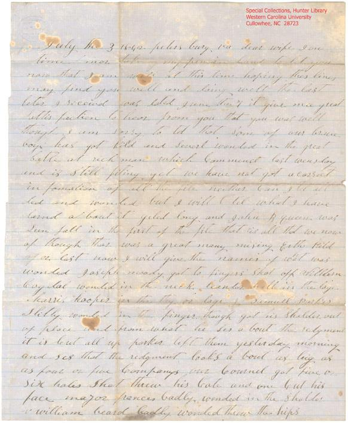

|
Civil War Letter - Mentions
the death of "Giled Long" in battle
(source: Western Carolina University
website)
"North Carolina Troops, vol. 7, lists the men of the North Carolina 25th
Infantry Regiment mentioned in the letter: the Long mentioned
in the letter is likely Peter G. Long, who was wounded at Malvern
Hill on July 1 and died of his wounds on July 17 (p. 374)."
"M.W. Parris, Petersburg, Virginia,
to Jane Parris, July 3, 1862. Parris writes of the battle at
Malvern Hill, Virginia, on July 1, 1862, which was part of the
Seven Days’ Battles (June 25 - July 1, 1862). He lists the
names of fellow soldiers from Jackson County killed and wounded
in the battle. He briefly mentions the military action and comments
on men in the hospital."
July the 3 1862 peters burg, va dear wife
I one
time mor take my pen in hand to let you
now that I am well at this time hoping thes lines
may find you well and doing well the last
leter I received was dated June the 7 it give mee great
Sattis faction to hear from you that you was well
though I am sorry to tel that Som of our brave
boys has got kild and Severl wounded in the great
battle at richmond which Commenct last wensday
and is Still fiting yet we have not got a correct
information of all the file neither Can I tel all
ded and wonded but I will l [strikethrough] tel what I have
larnd a bout it giled long and John B. queen was
Seen fall in the first of the fite that is all that we now
of though thar was a great many missing [Eith ?] kild
of or lost now I will give the names of what was
wonded Joseph moody got to fingers shot off William
Cogdal wonded in the neck leander hall in the lage
harris hooper in the thy or lage l [strickethrugh] Samuel Parker
Slitly wonded in the finger though hot his Sholder out
of place and from what he Ses a bout the redgment
it is but all up parker left them yesterday morning
and ses that the redgment looks a bout as big as
as four or five Companys our Cournel got five or
six holes Shot threw his Cote and one Cut his
face major frances badly wonded in the Sholder
w william beard badly wonded threw the hips
Capt Coalman his head shot off with a ball
that is all I have heard of the 16 redgment
our men has whipt them evry fite and has drove
them Severl miles and has taken a Site of prisners
with som six Jennerls and has kild Scors of
them I under Stand that all of our men is bured but
the is laying in piles and not bered a tall I think
that we will the victry but dearly bought Severl
of our men got ther gun Shot in too in thier hands
the the boys has lost ther blankets in the fite tha have
bin gon a about eight days frm Camp I Cant tel when
tha will Com back and one of our men did in the
hospitel da befor yesterday david wilson and severl
is in the hospitel yet A W parris is with the rest
in the fite I hant heard any thing a bout him parker
did not now hoo all was mising this is all I Can
find out a bout the fite I was left to gard Camp
James is not well he has bin punity Severl weaks
I hant any thing Elce to write at this time mor then
I want to See you verry bad but I Cant tel when
I will be blest with that blesing it wont be long tel
my time will be out a gin but I Cant tel whether I
will gt git to Com or not I hant heard any thing sed
a bout that times is two hot her now I am a frade for
mee to git off I will rite a gin in a few days so
nothing mor may the lord bles you and thake Care
of you is my prays and has bin ever sence I left
you
M W Parris to Jane Parris

|